Además de una herramienta de recopilación sirve como herramienta de análisis de vulnerabilidades.
Se basa en la teoría de grafos, recaudando toda la información de los objetos del dominio y los representa en forma de grafos con sus realaciones.
Sus componentes principales son dos>
sudo apt install bloodhound
Puesto que se basa en una base de datos no relacional basada en grafos que se denomina neo4j:
sudo neo4j console
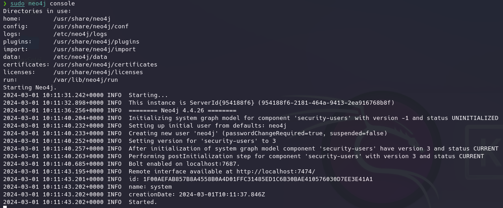
Vemos que crea un servicio en el puerto 7687
En la interfaz web usamos las credenciales por defecto neo4j y cambiamos la contraseña.
ejecutamos
bloodhound
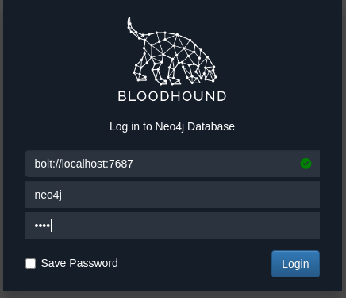
Una vez en la interfaz para poder cargar los datos necesitamos ejecutar los collectors en la maquina dentro del dominio así que copiamos en este caso el script ps1 https://raw.githubusercontent.com/BloodHoundAD/BloodHound/master/Collectors/SharpHound.ps1
Creamos documento de texto...guardar como...bloodhound.ps1...
En este caso windows defender no detecta el script como malicioso pero en versiones posteriores o si se tiene un buen EDR es posible que lo bloquee.
. .\bloodhound.ps1
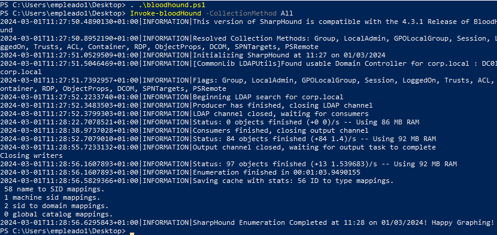
El archivo por defecto esta en la carpeta del usuario empleado1: C:\Users\empleado1
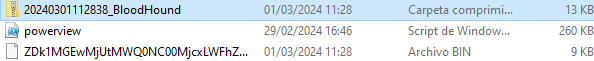
Necesitamos el zip en la maquina kali
Una vez hecho simplemente arrastramos el zip a la interfaz Bloodhound
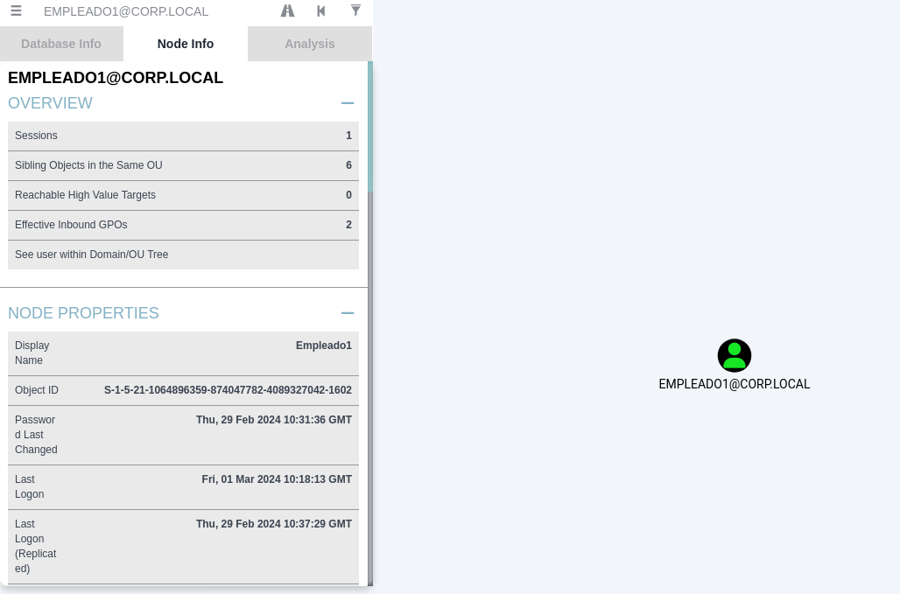
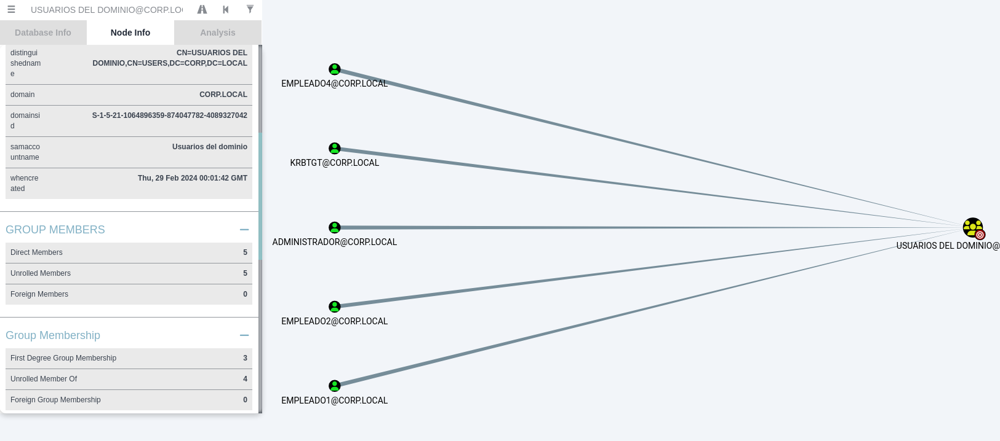
Desde aquí podemos analizar las relaciones, permisos, atributos, etc
Pero lo más interesante de BloodHound es el análisis que ya trae implementado porque al estar basado en ese tipo de base de datos no relacional permite hacer querys complejos y representarlas.
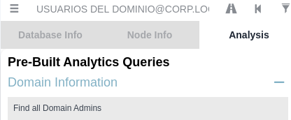
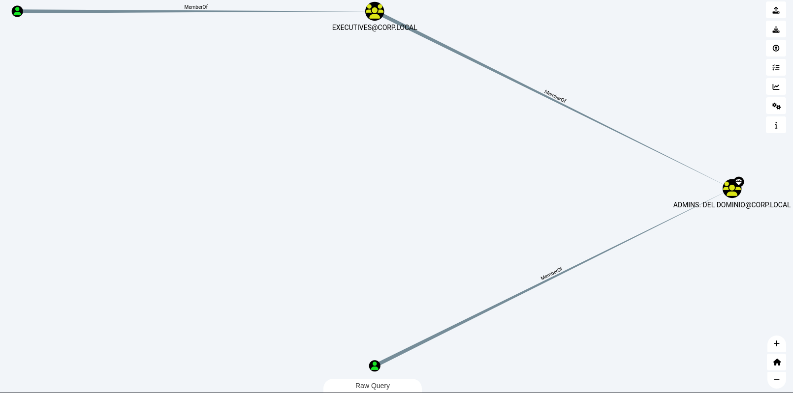
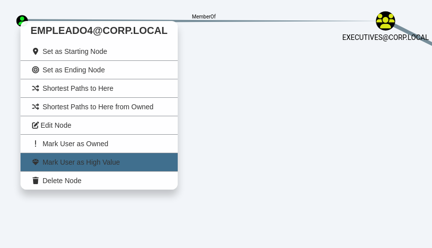
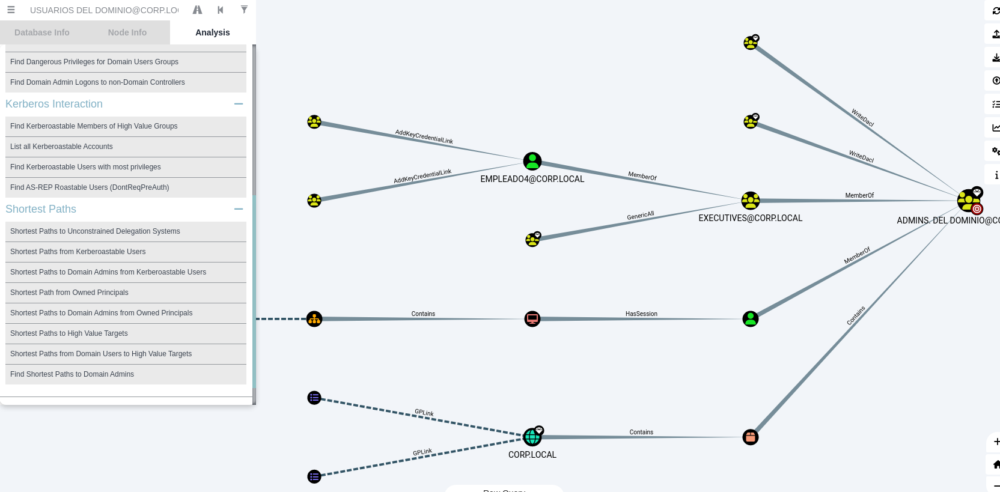
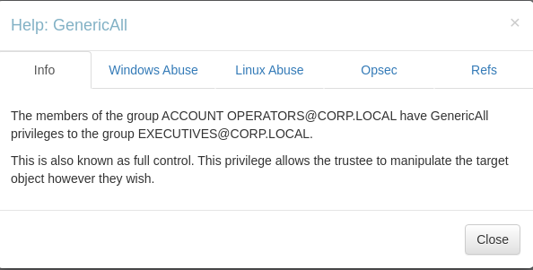
Ademas de las querys por defecto en la comunidad se encuentran algunas hechas por los usuarios: